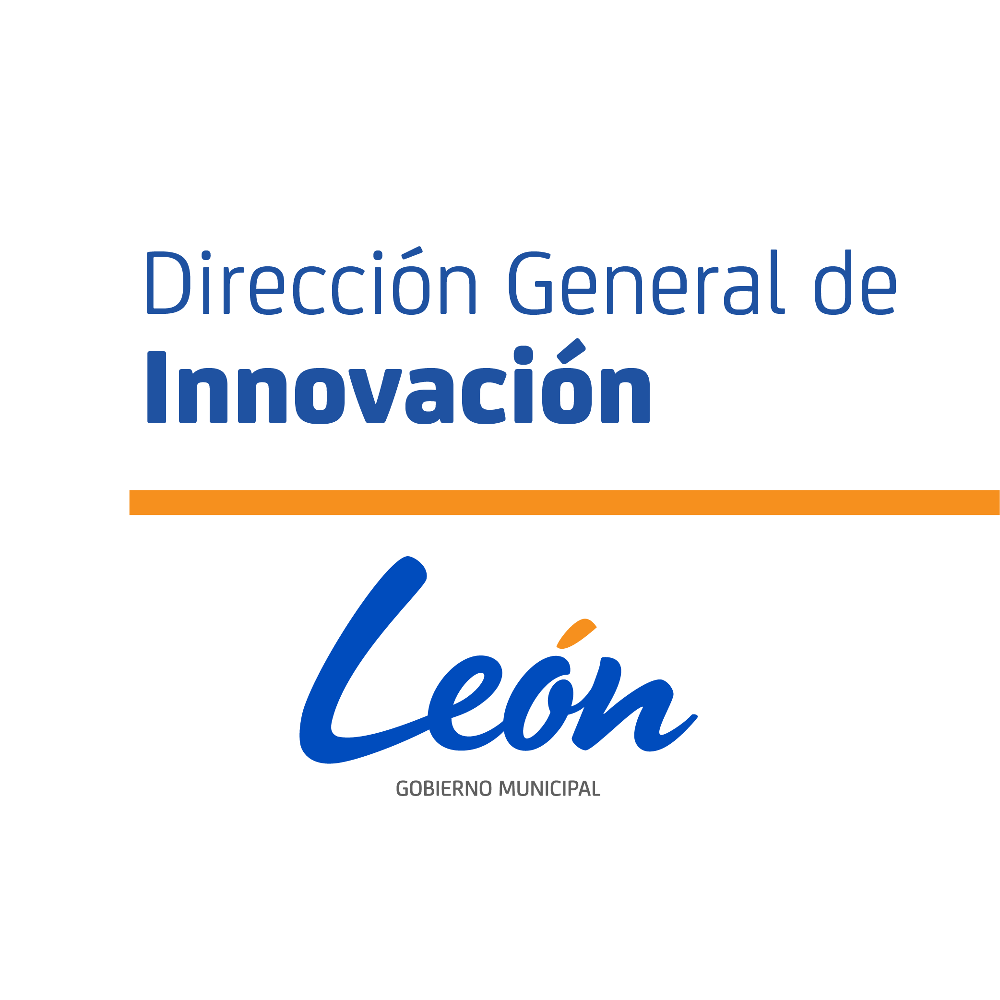
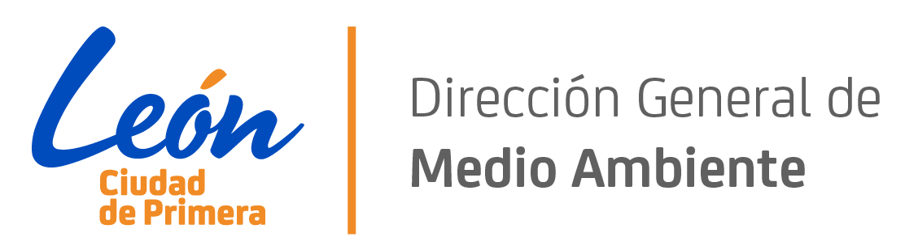
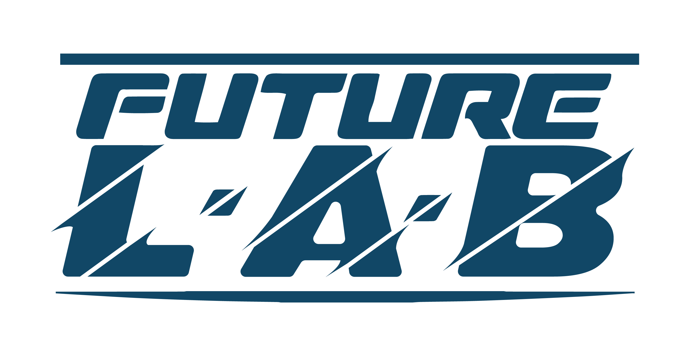
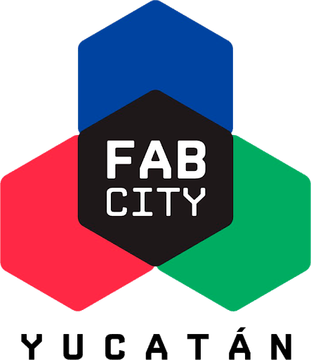
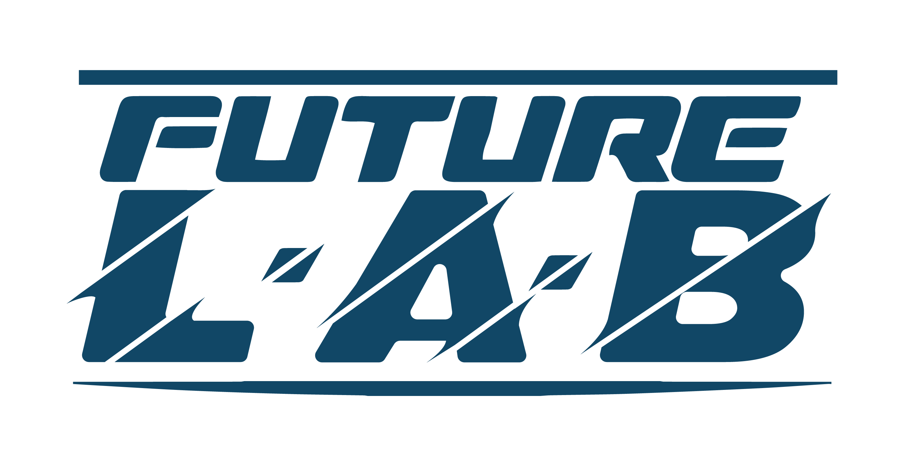
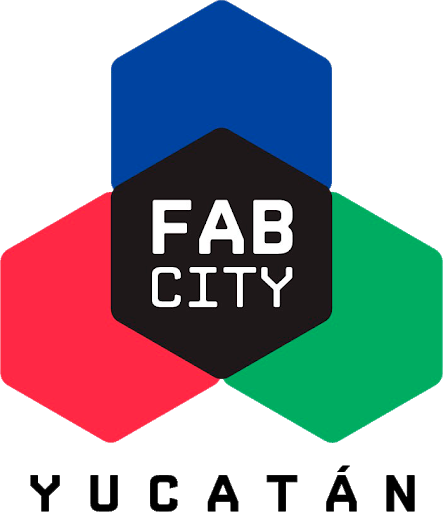

El Open Data Day León 2021, es una iniciativa de la Dirección General de Innovación del Municipio de León, a través de Lab León en colaboración con la Dirección General de Medio Ambiente y Future Lab, para celebrar el día mundial de datos abiertos aprendiendo, colaborando y creando con datos. Es la oportunidad perfecta para formar parte de la comunidad activa que contribuye al cambio a través de los datos abiertos. Esta celebración se llevará a cabo el día sábado 6 de marzo de 2021 a nivel mundial, siendo León una de las sedes destacadas a nivel internacional para abordar el tema de datos ambientales.
El registro estará abierto del 19 de febrero al 5 de marzo de 2021 sólo tienes que llenar el formulario de registro.
Gracias a la participación de:
  


